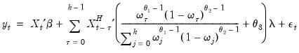

|
|
|


implies that the shape of the weight function depends on a single parameter, exhibiting slow decay when and slow increase when .
 is the dependent variable, sampled at a low frequency, at date
is the dependent variable, sampled at a low frequency, at date  ,
, is the set of regressors sampled at the same low frequency as
is the set of regressors sampled at the same low frequency as  ,
, values for each low frequency value. Note that
values for each low frequency value. Note that  is not restricted to the
is not restricted to the  values associated with the current
values associated with the current  as it may include values corresponding to lagged low frequency values.
as it may include values corresponding to lagged low frequency values. is a function describing the effect of the higher frequency data in the lower frequency regression
is a function describing the effect of the higher frequency data in the lower frequency regression ,
,  , and
, and  vectors of parameters to be estimated.
vectors of parameters to be estimated. are the data
are the data  high frequency periods prior to
high frequency periods prior to  (we will refer to these data as the
(we will refer to these data as the  -th high frequency lag at
-th high frequency lag at  ). Notice that this approach estimates a distinct
). Notice that this approach estimates a distinct  for each of the
for each of the  high frequency lag regressors.
high frequency lag regressors. associated with the new regressor. Viewed differently, the aggregation approach may be thought of as one in which the component higher frequency lags all enter the low frequency regression with a common coefficient
associated with the new regressor. Viewed differently, the aggregation approach may be thought of as one in which the component higher frequency lags all enter the low frequency regression with a common coefficient  .
. is a chosen number of lagged high frequency periods to use (where
is a chosen number of lagged high frequency periods to use (where  may be less than or greater than
may be less than or greater than  ).
). is a step length
is a step length , and so on up to the maximum lag of
, and so on up to the maximum lag of  .
.  , the regression coefficients are modeled as a
, the regression coefficients are modeled as a  dimensional lag polynomial in the MIDAS parameters
dimensional lag polynomial in the MIDAS parameters  . We may write the resulting restricted regression model as:
. We may write the resulting restricted regression model as: is the Almon polynomial order, and the chosen number of lags
is the Almon polynomial order, and the chosen number of lags  may be less than or greater than
may be less than or greater than  .
. associated with each of the
associated with each of the  sets of constructed variables .
sets of constructed variables . is a chosen number of lags,
is a chosen number of lags,  is a slope coefficient that is common across lags, and the differential response comes via the exponential weighting function and the lag polynomial which depends on the two MIDAS coefficients
is a slope coefficient that is common across lags, and the differential response comes via the exponential weighting function and the lag polynomial which depends on the two MIDAS coefficients  and
and  .
. is a number of lags,
is a number of lags,  is a slope coefficient that is common across lags, and
is a slope coefficient that is common across lags, and is a small number (in practice, approximately equal to ).
is a small number (in practice, approximately equal to ). .
. ,
,  , or and
, or and  .
. ).
). and
and  imposes both the shape and the zero endpoint weight restrictions.
imposes both the shape and the zero endpoint weight restrictions.